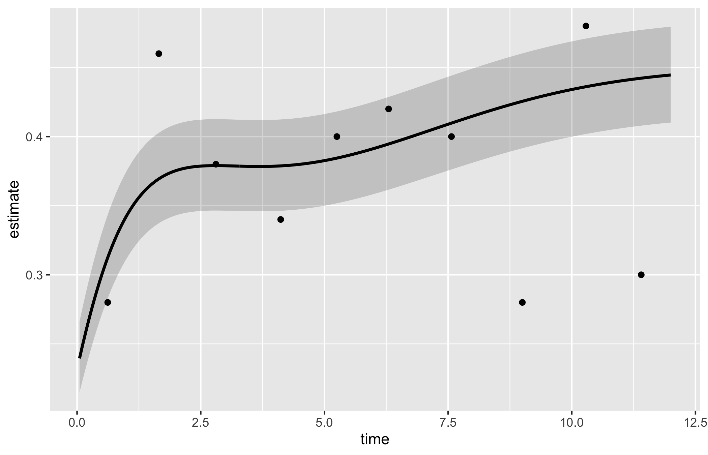

The survival chapter built its curves from raw patient times. This chapter is for the figures where the modelling is already done and you hold a table of fitted values: a parametric model has produced a smooth survival, hazard, or cumulative-hazard estimate at a grid of time points, complete with confidence bounds. Three related plotting functions from hvtiPlotR (Ehrlinger 2026) turn those tables into figures.
Reach for hv_hazard() when you have a parametric prediction grid and want to show the smooth curve, often with the empirical Kaplan-Meier points overlaid so a reviewer can judge how well the model fits. Reach for the nonparametric temporal-trend curve (hv_nonparametric()) when your outcome is a prevalence or a continuous measurement tracked over follow-up with a bootstrap confidence band rather than a survival function. Reach for the ordinal curve (hv_ordinal()) when the outcome has graded levels (regurgitation grade, severity class) and you want one probability curve per grade. All three take pre-computed data and hand back a bare ggplot you decorate the usual way.
10.2 The data it needs
hv_hazard() takes a parametric prediction grid: one row per time point, with an estimate column (survival, hazard, or cumhaz) and explicit lower/upper CI columns that you name in the call. Two helpers generate the demonstration data. sample_hazard_data() builds the prediction grid; sample_hazard_empirical() builds the binned Kaplan-Meier overlay (the discrete empirical estimate the smooth curve is meant to track). Using the same cohort size for both keeps the overlay aligned with the curve.
The most common figure is a smooth parametric survival curve with its confidence band plus discrete Kaplan-Meier points and error bars. You name the estimate column and its two CI columns, then pass the empirical data frame and its CI columns to draw the overlay. Start from the decorated version since the constructor has no separate bare mode here; the call below is the whole figure.
Figure 10.1: Smooth parametric survival curve with its confidence band and overlaid binned Kaplan-Meier points with error bars
10.4 Read it
The point of the overlay is the comparison between the smooth curve and the discrete points. Look for:
Points sitting on the curve. If the empirical Kaplan-Meier estimates fall on or very near the parametric line, the model is describing the data well. If the points wander systematically off the curve (above it early, below it late), the parametric form is the wrong shape and you should reconsider it.
The error bars against the band. The empirical error bars and the smooth confidence ribbon should tell a consistent story. Where the cohort thins, both widen; a point with a huge error bar is a region the figure cannot really support.
The curve shape itself. A survival curve falls and flattens; a hazard curve often peaks early then settles; a cumulative hazard only rises. A shape that contradicts the biology is a signal to check the model before the figure.
10.5 Variations
10.5.1 Hazard rate
Switch estimate_col to "hazard" and the matching CI columns for the instantaneous hazard rate, expressed as percent per year. This is the curve to show when the question is when the risk is highest rather than how many survive.
Figure 10.2: Instantaneous hazard rate in percent per year, showing when post-operative risk is highest
10.5.2 Cumulative hazard
The "cumhaz" column equals -log(S) * 100. It rises monotonically and its slope at any point is the instantaneous hazard. We reach for it in readmission and repeated-event analyses, where counting accumulated risk is more natural than reporting a survival fraction.
Figure 10.3: Cumulative hazard rising monotonically, with its slope giving the instantaneous hazard
10.5.3 Stratified by group
Pass group_col to compare two or more groups in one panel, each with its own curve, band, and empirical overlay. Look for curves whose bands stop overlapping in the windows where the treatment difference matters.
Figure 10.4: Survival curves, bands, and empirical overlays for two groups in a single panel
10.5.4 Population life-table overlay
For age-stratified survival you often want to set the study curves against what the general population would do. Pass a life-table data frame to reference and set ref_group_col to draw the population survival as dashed lines per age group. The gap between a study curve and its dashed reference is the excess mortality attributable to the condition rather than to ageing.
Figure 10.5: Age-stratified study survival curves set against dashed population life-table references
10.5.5 Nonparametric temporal-trend curve
When the outcome is a prevalence or a continuous measurement tracked over follow-up rather than a survival function, hv_nonparametric() prepares the average curve with a bootstrap CI ribbon. sample_nonparametric_curve_data() generates the average curve and CI; sample_nonparametric_curve_points() generates the binned summary points that overlay it. Build the S3 object once with the matching lower_col/upper_col and optional data_points, then plot().
The bare panel shows the average curve, its CI ribbon, and the binned summary points in default colours. Read it the same way you read the empirical overlay in Figure 10.1: the curve should pass through the binned points, and the ribbon should widen at the extremes where the bootstrap sample thins. A flat curve where you expected a trend is a hint that the outcome_type or CI columns are misspecified.
plot(np)

The shaded ribbon here is the 68% bootstrap CI (one standard error); pass ci_level = 0.95 to sample_nonparametric_curve_data() for 95% bands.
Figure 10.7: Two nonparametric average curves compared in one panel, each with its own bootstrap confidence ribbon
10.5.6 Nonparametric ordinal-outcome curve
When the outcome has graded levels, hv_ordinal() prepares one probability curve per grade from a cumulative proportional-odds model (the prevalence of each regurgitation grade over time, say). The curve data is long format, one row per time by grade. sample_nonparametric_ordinal_data() generates the curves and sample_nonparametric_ordinal_points() the binned summary points.
Build the object with both curve data and summary points. Each line is one grade level; because every patient has exactly one grade at each time, the lines sum to roughly 1.0 at every time point. Read the figure as a stacked story: the "None" line starts high and declines as patients drift into worse grades, and the severe line creeps up. Colours run from grey for None through graduated severity to firebrick for Severe so the eye reads worsening as warming.
Figure 10.8: One probability curve per regurgitation grade over time, coloured from grey to firebrick as severity worsens
To collapse higher grades into a combined level (Moderate + Severe, say), subset and re-label before passing the data to the constructor. Here we show a two-grade version drawn from the same sample data.
Figure 10.9: Two-grade ordinal version with higher grades collapsed into a combined level
10.6 Pitfalls
Mismatched CI columns. Every estimate column has its own pair of CI columns. Plot hazard with the survival bounds and the band will be nonsense. Name the matching lower_col/upper_col for the column you are plotting.
Forgetting the empirical overlay. A smooth parametric curve always looks convincing. Without the Kaplan-Meier points a reviewer cannot tell whether the model fits, so include empirical whenever you have it.
Ordinal lines that do not sum to one. If your grade curves drift above 1.0 or cross oddly, the wide-format grade columns were probably reshaped to long format incorrectly. Each time point’s grades should add to about 1.0.
Over-reading the CI level. The nonparametric ribbon defaults to a 68% band (one standard error), which is narrower than the 95% band readers expect. State the level in the caption, or switch to ci_level = 0.95.
Ehrlinger, John. 2026. hvtiPlotR: HVTI Ggplot2 Themes and Clinical Plot Functions for the Cleveland Clinic Heart & Vascular Institute. https://github.com/ehrlinger/hvtiPlotR.